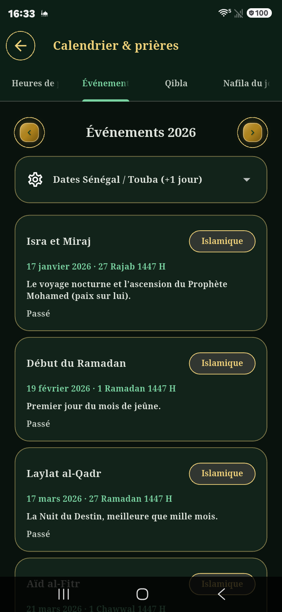
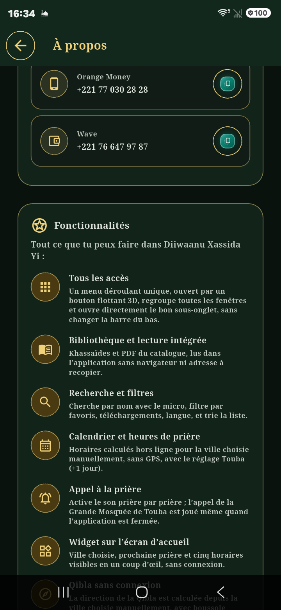
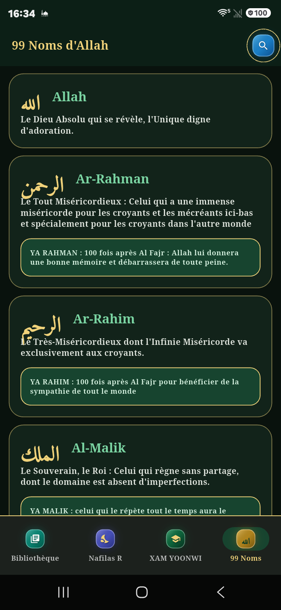
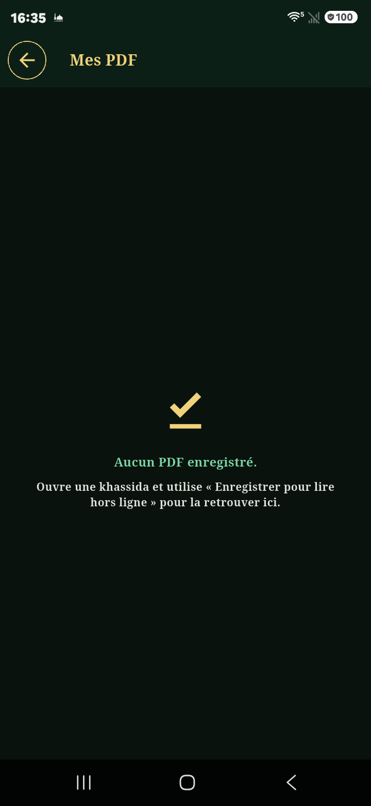

Un seul menu, tous les accès
Le bouton flottant « Tous les accès » regroupe toutes les fenêtres et ouvre directement le bon écran, sans changer la barre du bas.
Application Android gratuite · hors ligne
Les khassaïdes, les heures de prière et le calendrier mouride réunis dans une application Android gratuite, hors ligne, sans publicité et sans compte. Projet non lucratif, uniquement pour servir Serigne Touba.
But non lucratif — Uniquement pour servir Serigne Touba
Wolof Xassida yi, waxtu julli yi ak arminaayu julit yi ci ap jëfandikukaay bu bees, te ñàkk nett.
English Qasā'id, offline prayer times, and Mouride calendar in one free, ad-free Android app.
L’application est prête et signée ; la publication attend la validation du compte Google Play. Cliquez pour demander à être averti dès la mise en ligne.
Découvrir toutes les rubriques · la bibliothèque · la FAQ

Khassaïdes et xassida, heures de prière hors ligne, calendrier mouride, Qibla, 99 noms d’Allah et PDF téléchargés : rien n’est envoyé à un serveur, aucune donnée personnelle n’est collectée.
Le bouton flottant « Tous les accès » regroupe toutes les fenêtres et ouvre directement le bon écran, sans changer la barre du bas.
Les khassaïdes se lisent dans l’application, en ligne ou après téléchargement. Recherche par nom, micro, filtres et favoris.
Consultez et gérez vos PDF enregistrés depuis « Mes PDF » : ouverture dans le lecteur intégré, sans historique envoyé ni besoin de réseau.
Horaires calculés hors ligne pour la ville choisie manuellement, sans GPS. Le widget affiche les cinq prières et la prochaine.
Événements mourides et religieux, compte à rebours, direction de la Qibla avec boussole vivante et repli statique.
Les sept fiches de la semaine se feuillètent en français, wolof et anglais. L’écran s’ouvre sur le jour du téléphone.
Les trente nuits de nafilas en texte, et les Noms d’Allah en arabe, transcription latine et français.
Trente chapitres en texte avec portrait, pour découvrir la vie, les enseignements, Touba, les Khalifes et la famille de Serigne Touba.
Sombre par défaut, clair ou automatique ; taille du texte ajustable ; respect du réglage « Réduire le mouvement ».
La bibliothèque de khassaïdes et les six rubriques du site restent ouvertes à tous. Ce sont des pages réelles, sans compte, sans publicité et sans fonction interactive inventée.
760 khassaïdes classés par langue puis par ordre alphabétique, avec accès direct aux PDF.
Horaires hors ligne, villes choisies manuellement, calendrier, Qibla et widget.
Les 30 nuits de nafilas en texte seul, avec invocations, répétitions et bienfaits.
Les sept fiches de la semaine en français, wolof et anglais.
Noms d’Allah en arabe, transcription latine, français et dhikr quand il figure.
30 chapitres sur Serigne Touba, ses enseignements, Touba, le Grand Magal et sa famille.
Voir aussi la page des rubriques et leurs aperçus.
Onze vues, légendées et numérotées : Bibliothèque, Heures de prière, Fiche du livre, Événements, À propos, 99 Noms, Nafilas R, Mes PDF, XAM YOONWI, Qibla et Nafila du jour.
Captures prises directement depuis l’application, sans lecteur vidéo ni contenu externe. Sur mobile, faites glisser horizontalement ; les légendes restent visibles sous chaque image.
Cliquer sur une capture pour l’ouvrir en grand et lire le texte.









Trois réponses simples sur le fonctionnement hors ligne, le choix de la ville et la confidentialité.
Oui. Les khassaïdes, les heures de prière, le calendrier mouride, la Qibla, les nafilas, les 99 noms d’Allah, XAM YOONWI et les PDF déjà téléchargés sont consultables hors ligne. Aucun serveur n’est interrogé pour afficher ces rubriques.
Non. La ville est choisie manuellement dans une liste. Les horaires en sont calculés sur le téléphone. Pour la Qibla, les capteurs rendent la boussole vivante quand ils sont disponibles ; sinon, un repère statique prend le relais. Aucune position n’est demandée ni enregistrée.
Non. Pas de compte, pas de publicité, pas d’analytique et pas de télémétrie. Les préférences restent sur l’appareil. La politique de confidentialité est publique et inchangée.
Application réalisée par Mouhamadou Falilou Seye, projet non lucratif uniquement pour servir Serigne Touba.
Écrivez par e-mail pour les retours sur l’application, les signalements de traduction et les demandes liées aux droits. Réservez WhatsApp aux questions pratiques et à la demande d’information lors de la mise en ligne.
Retours, droits et traductions.